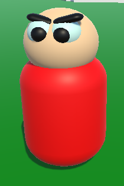
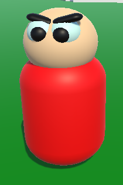

Snake Odyessy 64
Platform: PC
Team Size: 1
Project Duration: 3 months
Engine & Tools: Unity, Photoshop, YouTube, Google Docs
Platform: PC
Team Size: 1
Project Duration: 3 months
Engine & Tools: Unity, Photoshop, YouTube, Google Docs

Snake Odyssey 64 is a fast-paced arcade-style game developed in just six hours during a game jam, where the objective is to control a snake and consume as many people as possible without crashing into walls or obstacles. The game was awarded "Best Gameplay" at the event, highlighting its engaging and addictive mechanics. The project was completed by a team of three university students, with a focus on quick development and fun gameplay.
In Snake Odyssey 64, players control a snake that consumes as many people as possible while avoiding walls and obstacles, with the goal of achieving a high score. I was responsible for programming the smooth and responsive snake movement system, which formed the foundation of the gameplay. I also implemented the point system, which tracks the player's score based on the number of targets consumed, reinforcing the competitive loop. As the snake grows longer, the difficulty naturally scales, requiring players to adapt their strategies as the game becomes more challenging. This balanced progression and engaging mechanics contributed to the game winning the "Best Gameplay" award at the game jam. Developed in just six hours, the project was a collaborative effort between three team members, with a focus on rapid iteration, effective communication, and creating a polished, fun experience within a limited time frame.
I was responsible for coding the snake movement system, ensuring smooth and responsive controls. Additionally, I implemented the point system, which tracks the player’s score based on the number of people consumed, contributing to the game's core competitive loop.
Game Mechanics Design:Developed the main gameplay mechanics, ensuring that the difficulty scaled naturally as the snake grew longer and the game became progressively harder. This balance kept players challenged and engaged throughout each round.
Contributed to the overall gameplay design, which earned the project the "Best Gameplay" award in the game jam. The game's addictive mechanics and balance between challenge and fun were key factors in its success.
Worked closely with two other team members to quickly conceptualize and implement the game within the tight six-hour time frame. We focused on rapid iteration, efficient communication, and task management to deliver a polished final product in a short period.
 

Both the snake and the characters it consumes were designed with a simple, cartoony aesthetic to align with the game's low-poly art style. This cohesive visual approach enhanced the game's playful tone while maintaining clarity and appeal throughout the experience.
The puzzles in Where Am I gradually increase in complexity, evolving from simple tasks such as placing a cube on a pressure pad to solving intricate, multi-step challenges required to escape a single room. Each puzzle is carefully designed to engage players, encouraging them to think critically about their next move and strategically plan their actions to progress through the game.